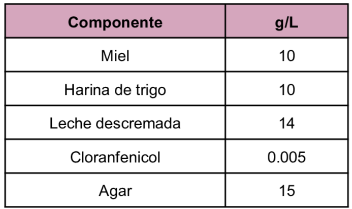
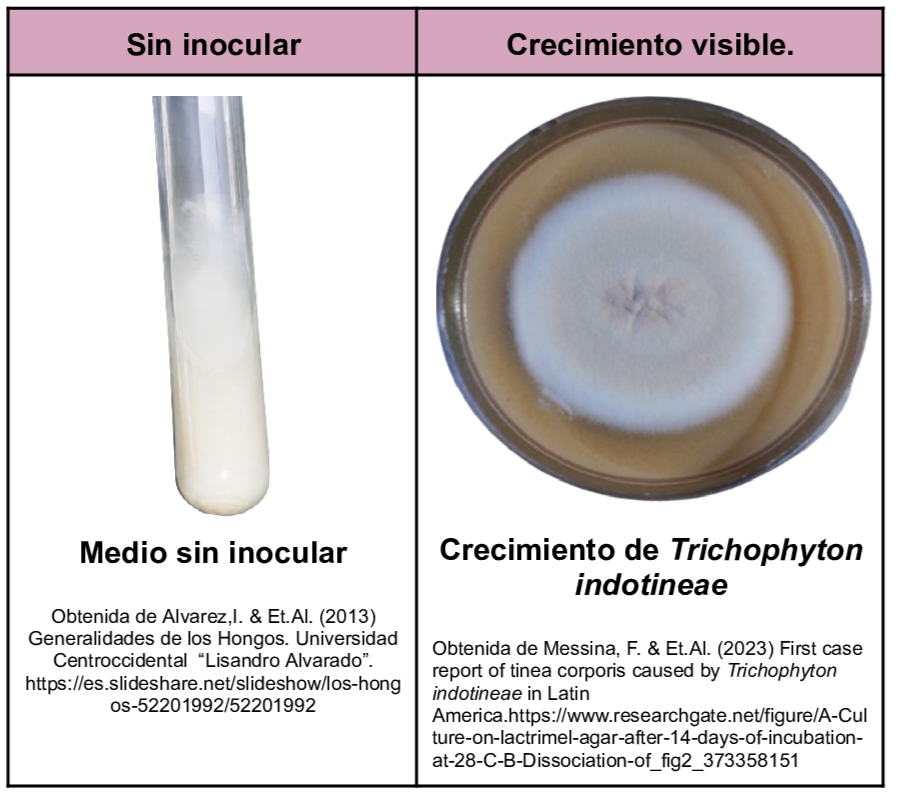

Medio usado para el aislamiento de hongos a partir de muestras clínicas en específico para el aislamiento de Dermatofitos como
Microsporum, Trichophyton y Epidermophyton
,
sin embargo también crecen
Candida albicans.
Los elementos en su composición favorecen la formación de estructuras tales como clamidosporas, blastoconidias, hifas, pseudohifas y artrosporas. La presencia del cloranfenicol permite evitar el desarrollo de micetos saprófitos y de bacterias.
Composición

pH a 25°C 5.5±0.2
Resultados Posibles
El crecimiento varía dependiendo de la especie que se desarrolle, entre algunos crecimientos que se pueden observar se encuentran los siguientes :
- Candida albicans: Colonias pequeñas-medianas blanquecinas-cremas.
- Trichophyton mentagrophytes/ Trichophyton equinum : Colonias blancas esponjosas con presencia de zonas rojas en el medio alrededor de las colonias.

Referencias
InsumoLab (2017) Agar Lactrimel. https://amilab.cl/files/PME7520.pdf